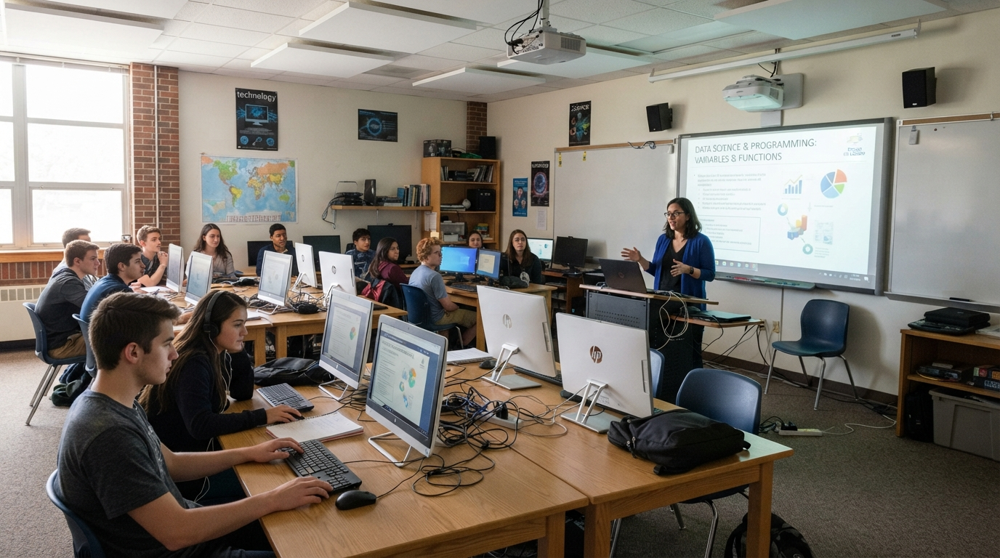

Se registra el equipo
Administración da de alta el equipo con su tipo, ubicación y número de inventario único.
Sistema de Inventario, Registro y Administración de Materiales y Equipos
SIRAME centraliza, automatiza y asegura la gestión del patrimonio e inventario de tu institución. Sustituye el papel y las hojas de cálculo por un entorno digital con trazabilidad total, control de estados, gestión de mantenimiento y auditoría en tiempo real.
SIRAME es un software que desarrollamos e instalamos para tu institución (escuela, universidad, empresa u oficina), para que administres el inventario desde un panel propio con permisos por rol.
3 roles con permisos definidos: Profesor, Coordinador y Administración

EQ-0142
Proyector — Laboratorio 2
Traslado registrado
Actualizando estado…
0
Módulos del sistema
0
Roles con permisos propios
0
Modelos de datos conectados
0
Sistema para toda la institución
Cómo funciona
El flujo completo, del registro inicial al historial de cada equipo. El detalle está en la página El sistema.
Administración da de alta el equipo con su tipo, ubicación y número de inventario único.
Coordinadores registran traslados; profesores consultan estado y reportan incidencias.
Cada mantenimiento, traslado o baja queda documentado y disponible para consulta y auditoría.
Estructura del sistema
Todo el ciclo de vida de un equipo queda documentado: dónde está, quién lo movió, qué mantenimiento tuvo y por qué salió de servicio.
Ficha por número de inventario, con estado y ubicación actual.
Aulas, laboratorios y oficinas con su equipo asignado.
Acceso diferenciado por rol, con contraseñas cifradas con bcrypt.
Movimientos entre ubicaciones, con motivo, fecha y responsable.
Historial preventivo y correctivo por equipo.
Proceso formal para equipo fuera de servicio, con archivo auditable.
Reporte y seguimiento de fallas y pérdidas.
Solicitá acceso a SIRAME y empezá a registrar equipo, traslados y mantenimientos desde el primer día.
Solicitar acceso